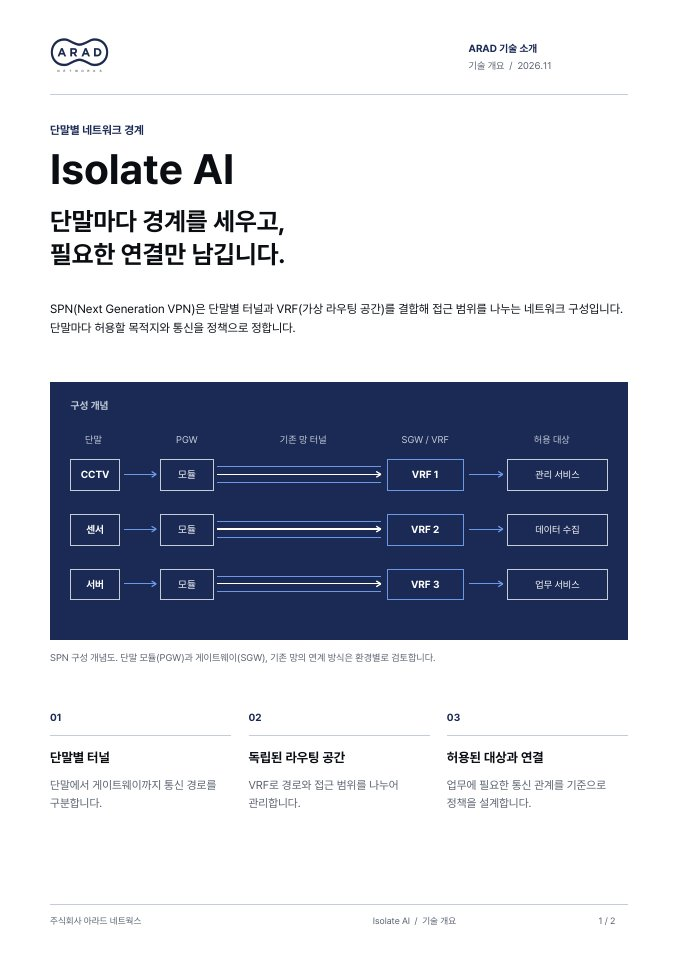

Resources
기술의 구조를,
한눈에 살펴보세요.
단말별 경계, AI 작업의 경로, 현장의 통신 방식. 세 사업의 원리와 도입을 검토할 때 필요한 내용을 기술 개요로 정리했습니다.

우리 환경에 맞는
자료가 필요하신가요?
회사소개서나 상세 기술 자료가 필요하다면 검토 중인 사업영역과 환경을 알려주세요. 필요한 내용을 중심으로 자료 협의를 시작할 수 있습니다.
상세 자료 요청Resources
단말별 경계, AI 작업의 경로, 현장의 통신 방식. 세 사업의 원리와 도입을 검토할 때 필요한 내용을 기술 개요로 정리했습니다.
회사소개서나 상세 기술 자료가 필요하다면 검토 중인 사업영역과 환경을 알려주세요. 필요한 내용을 중심으로 자료 협의를 시작할 수 있습니다.
상세 자료 요청